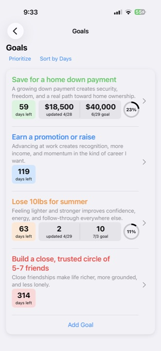

Goal context
Every goal can sit inside a broader life area.
Loom connects goals to life areas, Action Plans, Little Wins, reflection, and LoomAI guidance so progress stays practical.

Every goal can sit inside a broader life area.
Translate goals into specific actions with due dates and details.
Use Little Wins and reflection to keep progress visible and adaptable.
A goal management system should make the next action easier to see. Loom is built around the full chain: what matters, what goal it supports, what action comes next, and what should repeat.